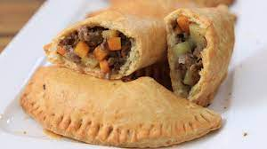

Meat Pie

Nigerian meat pies are delicious pastries
filled with miced meat, potato and carrots.
The pastry is slightly flaky and very rich in flavor,
the filling is moist and flavorful.
Ingredients
For the Pastry:
-
4 cups (500 g) All-Purpose Flour
-
200 g Butter (cubed)
-
2 Eggs (Just the Whites)
-
1 tsp Salt
-
1 tbsp Sugar
-
1 tsp Baking Powder
-
1/4 cup (60 ml) Cold Water
For the Filling:
-
3/4 pound (350 g) Ground Beef
-
1 Large Potato
-
1 Large Onion
-
1 Large Carrot
-
1 Piece of Ginger
-
1 cup (240 ml) Water
-
Salt, Pepper, Cumin, Curry Pounder, Garlic Powder, Chili Powder to Taste
Instructions
-
Making the Pastry: In a large bowl mix together flour,
sugar, salt, and baking powder. Add melted butter and rub it with the
flour mixture until you get a crumbly texture
-
Beat 2 egg whites and add it to the flour mixture. As you mix, slowly
add water until a dough is formed. Wrap with cling film and cool for
30 minutes.
-
Making the Filling: In a large pan heat oil. Add onion
and ginger, sauté for 5-6 minutes, until translucent.
-
Add the meat and cook, until it is no longer pink. Add your seasonings,
stir, and cook for 2 minutets more
-
Add in cubed potatoes and carrots. Pour in water, and stir.
-
Bring this mixture to a simmer over medium-high heat. Reduce the heat
and simmer for 15 minutes until the potatoes are soft enough to mash.
-
Making the Pies: Preheat oven to 350 F.
-
Section a piece of dough into a small circle.
-
Add about 1-2 tbsp of the meat mixture, sealing the pie's edges with a
fork.
-
Use the leftoveer egg yolks from earlier to brush a coating over the pie.
Repeat for desired number of pies.
-
Bake for 25-30 minutes, allowing to cool slightly before serving.
Yum! Enjoy!
Return to Main Page